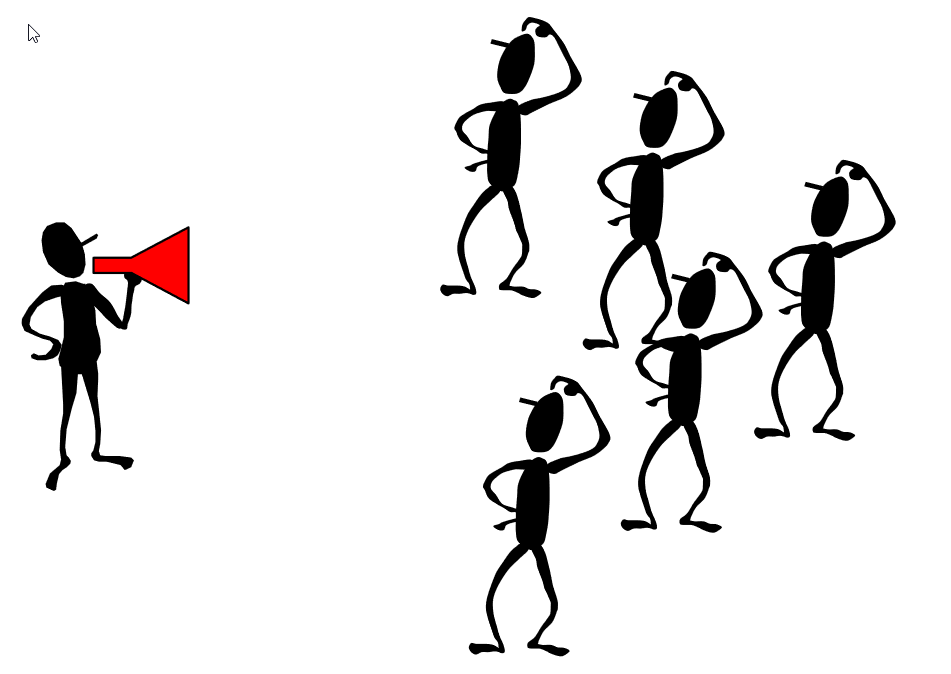

Broadcast
This type falls in the collective mode of communication where a data source is transferred to all processes (ranks) in a communicator. Just like the following image.
In the following example, a string variable data is broadcasted from rank 0 to all the other ranks within the communicator.
from mpi4py import MPI
comm = MPI.COMM_WORLD
rank = comm.Get_rank()
if rank == 0:
data = ['r','e','d']
else:
data = None
data = comm.bcast(data, root=0)
print('Rank: ',rank,', data: ' ,data)
Broadcasting involves sending data to all processes (ranks) in a communicator. For instance, in the image above has the data variable in rank 1, and after broadcast , it is sent to all the other ranks within the communicator.
- comm.bcast(obj, root=0)
- Broadcasts obj from root.
- Parameters:
obj – Any
root – int
- Return type:
Any